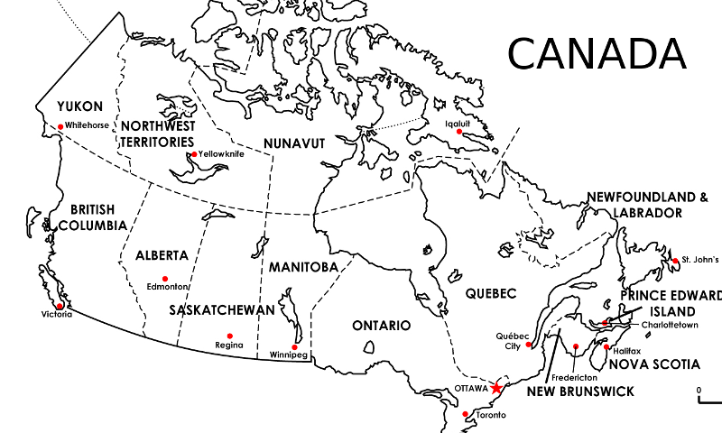

Here we have the usual minikanren fair search operators
and then modified "depth first" variants
This allows mk programming where you can select which kind search subprograms should use
(define-syntax conj+ (syntax-rules () ((_ g) (Zzz g)) ((_ g0 g ...) (conj (Zzz g0) (conj+ g ...))))) (define-syntax disj+ (syntax-rules () ((_ g) (Zzz g)) ((_ g0 g ...) (disj (Zzz g0) (disj+ g ...))))) (define-syntax fresh (syntax-rules () ((_ () g0 g ...) (conj+ g0 g ...)) ((_ (x0 x ...) g0 g ...) (call/fresh (lambda (x0) (fresh (x ...) g0 g ...)))))) (define-syntax conde (syntax-rules () ((_ (g0 g ...) ...) (disj+ (conj+ g0 g ...) ...)))) ;; depth first search versions of the same (define-syntax conj+/dfs (syntax-rules () ((_ g) g) ((_ g0 g ...) (conj/dfs g0 (conj+/dfs g ...))))) (define-syntax disj+/dfs (syntax-rules () ((_ g) g) ((_ g0 g ...) (disj/dfs g0 (disj+/dfs g ...))))) (define-syntax fresh/dfs (syntax-rules () ((_ () g0 g ...) (conj+/dfs g0 g ...)) ((_ (x0 x ...) g0 g ...) (call/fresh (lambda (x0) (fresh/dfs (x ...) g0 g ...)))))) (define-syntax conde/dfs (syntax-rules () ((_ (g0 g ...) ...) (disj+/dfs (conj+ g0 g ...) ...))))
How can we represent a map in minikanren? A list of the regions and then as association list explaining what each region is next to.
becomes
(define nodes '(quebec northwest-territories ontario british-columbia manitoba alberta saskatchewan yukon nunavut newfoundland-and-labrador new-brunswick nova-scotia prince-edward-island)) (define edges '((quebec ontario) (quebec new-brunswick) (quebec newfoundland-and-labrador) (northwest-territories yukon) (northwest-territories british-columbia) (northwest-territories alberta) (northwest-territories saskatchewan) (northwest-territories nunavut) (ontario manitoba) (british-columbia yukon) (british-columbia alberta) (manitoba saskatchewan) (manitoba nunavut) (alberta saskatchewan) (new-brunswick nova-scotia)))